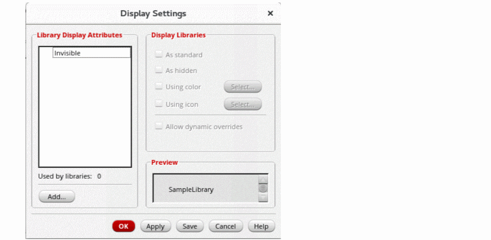
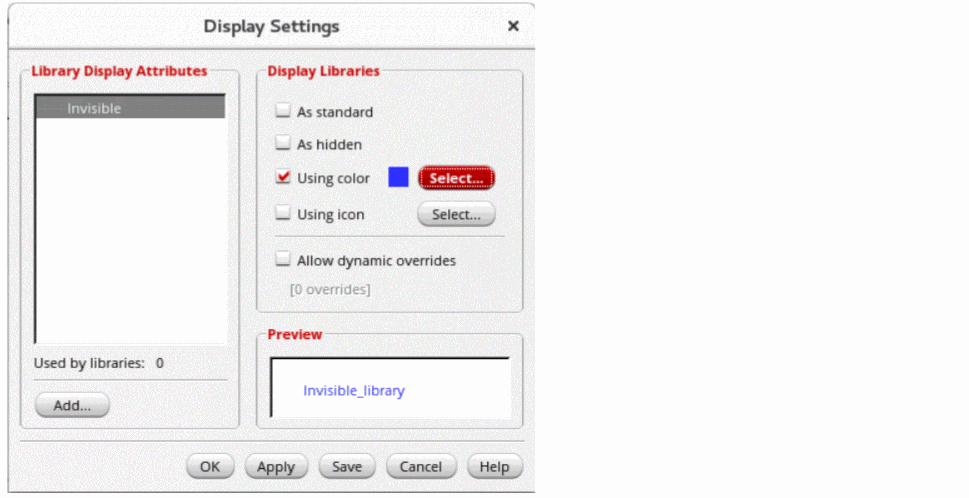
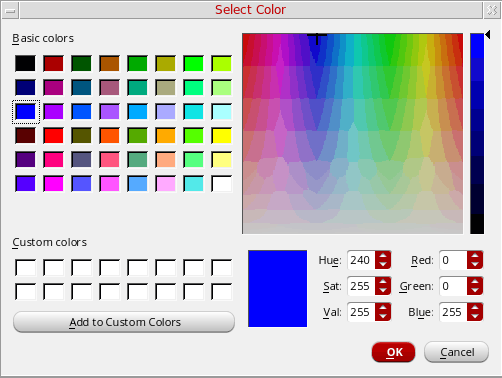

Setting Display Options for Libraries
Cadence recommends that you never edit the displayPrefs file manually.
To set display options for libraries:
-
Select Edit - Display Settings.
The Display Settings form appears.The Library Display Attributes list box displays all predefined and custom attributes. It also displays any attributes that have been set on libraries in yourcds.libfile but that have not yet been defined in adisplayPrefsfile.
To create a new attribute, see Creating New Library Attributes. -
Select an attribute.The Matching libraries field under the Library Display Attributes listbox displays the number of libraries on which the selected attribute is currently set.
- Select the new display settings for the attribute.
-
Click Select to select a color from the Select color dialog box.
- Choose a color from the Basic colors or Custom colors table, or create a custom color by moving the cross in the color spectrum to the color you want and then clicking Add to Custom Colors.
-
The color you select is displayed next to the Using color option.
The icon you select is displayed next to the Using icon option. - The Preview field shows a sample library name with the display settings that you have selected.
-
Click OK/Apply/Save.
Save applies your changes and also saves them to thedisplayPrefsfile immediately.
Libraries tagged with the attributes you changed are now displayed in the new settings.
The new or modified attribute definitions are saved in the current_working_dir/.cadence/libManager/displayPrefs file. If this file does not exist, it is created. If you clicked Save, your changes are saved to this file immediately; if you clicked OK or Apply, the file is updated when you exit the Library Manager.
Related Topics
Selecting an Icon for a Library Display Attribute
Setting Attributes on a Library
Return to top